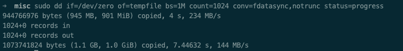

NAS
Done: Yes 优先级: 4 位置: 其他 标签: 家电 预算: 265
需求
- 家庭多媒体中心，需要支持多个设备（TV 手机 PC）
- 下载站，迅雷、百度云、BtSync
- 照片存储，能挂载成 PC/Mac 磁盘，Lightroom 能直接修改
emby + kodi
二手价格
CPU：赛扬 4900 奔腾 G4560 i3 400
主板：H110M 250
固态：M.2 100G 150
内存：4G ddr4 200
电源：250-300w 200
蜗牛星际组 NAS
蜗牛星际：我集齐了ABCD款，折腾矿渣一个月的全记录！__什么值得买
矿难来袭！速看蜗牛星际矿NAS用料。 - 徐自远的乱七八糟小站
功耗
639.3 小时，用电量 10.61 kwh。硬盘唤醒功率：24w，硬盘休眠功率 14w。
验证网卡千兆
iperf 传输速率只有 100mbit
lshw 可查看硬件信息
网卡信息 mii-tool ethtool
ArchLinux
对 Nas 系统了解不多，直观印象就是 Linux 上+ WebUI。我还是喜欢通过 ssh 进行系统管理，所以我选择用 ArchLinux 组建一个 NAS 系统。
配合一台云主机用 Nginx 做反向代理，加上内网穿透技术，相对安全的把服务暴露到互联网。
aurutils
aurutils 的思路是用一个自定义的本地 pacman 源，将 aur 上的包编译后存入本地的源，再通过 pacman -Syu 安装，非常聪明
aur sync $package_name
sudo pacman -Syu $package_name
需要建一个本地 pacman 的 repository，详见 man aur
aur 被墙可以用清华大学的镜像，比如：
env AUR_LOCATION='[https://aur.tuna.tsinghua.edu.cn](https://aur.tuna.tsinghua.edu.cn/)' aur sync -c jellyfin
systemd
alias s='sudo systemctl'
sudo systemctl set-default multi-user.target
固态才16G，日志也不要太大，512足够了
sudo journalctl --vacuum-size=512M
开机启动的服务：
● ├─aria2.service
● ├─cps.service
● ├─dnsmasq.service
● ├─frpc.service
● ├─jellyfin.service
● ├─mega.service
● ├─nfs-server.service
● ├─nginx.service
● ├─nmb.service
● ├─privoxy.service
● ├─rslsync.service
● ├─shadowsocks-libev@****.service
● ├─smb.service
● ├─sshd.service
● ├─transmission.service
● ├─****
文件共享协议
Nas 最重要的功能，就是把存储空间暴露给其他网络上的设备。这方面比较简单，就是 nfs 和 smb。
NFS
nfs 的配置起来比较简单，不幸权限管理要细化起来还是比较麻烦的。
把目录开放给主机，实际主机上的应用程序都有了读取 nfs 目录的能力。
相对安全要求不高的情景，我还是直接用 all_squash root_squash，然后再用 anonuid anongid 设置特定的用户。
安全性需要搭配 Kerberos 使用，太繁琐。
Mac 经常会断掉
macOS X Mount NFS Share / Set an NFS Client - nixCraft
使用 nfs.map :
Kodi
kodi 需要 insecure，见 3 NFS sharing from Linux
Samba
启用 smb 和 nmb，不要去启用 samba
权限
各类下载软件的默认都用各种的用户和组，修改各种 systemd 脚本不好维护。
- 用
setfacl精细化控制各个目录各个用户的权限，ex：setfacl -d -m u:user:rwx target - 用组管理，比如 download media 作为各个目录的组权限，再把需要的用户加入组中。
方案 2 足够简单且基本覆盖当前需求
媒体服务器
只做文件共享的 NAS 和 SAN 又有什么区别呢😁？
jellyfin
Kodi 更像一个带资源管理器的播放器，不能脱离GUI，没有一般意义的 server 版本。
linuxserver/docker-kodi-headless
Emby 3.6 之后也不开源了，代替品
安装了 jellyfin 后还安装了 FFmpeg
将用户加入组 jellyfin 方便修改 jellfin 生成的文件
rslsync 和 jellyfin 在 1900 端口有冲突
OpenMediaVault
aria2
sudo pacman -Syu aria2
配置文件 /etc/conf.d/aria2c.conf ，修改下载目录和启用 rpc。见 aria2c.conf
systemctl start aria2cd.service
btsync
需要搭配 ss 使用，手动建需要fq的地址加入 privoxy 的gfwlist 配置里面，在 app 设置代理为 privoxy
config.getsync.com
config.resilio.com
173.244.217.42
209.95.56.60
107.182.230.198
173.244.209.150
54.235.182.157
Transmission
鉴于 bt 下载都是通过预分配空间再来写入数据来减少碎片，直接在存放媒体的 8t 叠瓦盘上下载就不太合适了，所以我用闲置的 ssd 来做下载盘，下载完成后再移入目标磁盘。通过开启 incomplete_dir 来实现这个功能。这个功能需要修改 /var/lib/transmission/.config/transmission-daemon/settings.json 。其实用了 ssd 预分配也可以关掉，毕竟 ssd 可以不管文件碎片化了，预分配浪费一次写入也对寿命无益，不过，0占位的文件可能已经被文件系统优化了，所以未经验证的认为影响应该不大。不过我还是关掉了。
需要注意， 停止服务后，才能修改 settings.json 。不然 stop 的时候会重置 settings.json
另外还要注意权限问题，transmission 是以 transmission:transmission 这个用户来操作的。
Incomplete-dir
设置下载中的目录到 ssd，避免折腾坏叠瓦盘。
transmission 可以通过设置 incomplete-dir 来实现，/etc/transmission-daemon/settings.json：
"incomplete-dir": "/mnt/ssd/srv/bt",
"incomplete-dir-enabled": true,
The incomplete-dir appears to be used only when the download-dir matches the entered folder when adding the torrent. You could argue that the free selection of download folder (which could be on another filesystem entirely) conflicts with using a single incomplete-dir. So I would suggest explicitly not using the incomplete-dir setting at all as it is not used when selecting a download folder that differs from download-dir anyway.
transmission-daemon: UDP Failed to set receive / send buffer
debian - transmission-daemon: UDP Failed to set receive / send buffer - Unix & Linux Stack Exchange
transmission-tracker-add
AndrewMarchukov/tracker-add: Fully automated script for adding more trackers to Transmission.
Book
- calibre 创建维护书库
- calibre-web，作为 书库（calibredb） 的前端，calibre 提供的web端太简略
- calibre-helper，监控特定目录下的文件变更，自动添加进书库
这些命令都需要编辑同一个目录，需要统一权限
calibre
书用 calibre 来管理，calibre 会将书复制到 CALIBRE_LIBRARY_PATH，一本书在 nas 起码上存在两份。
- 安装 calibre 主要是用它的命令行工具，来管理 CALIBRE_LIBRARY_PATH。
- 找不到 headless 的版本，安装 calibre 引入一堆用不上的 qt 依赖，有点难受。
- 还有很强大的阅读功能也用不上。
- 在 mac/pc 上也可以通过 nfs 挂载这个目录，直接用本地的 calibre ui 来管理和阅读。
- 没有译者字段，应该可以自定义metadata
- 另外解析 pdf 元数据的时候有个小 bug，还给提了 PR
calibre-web
建议用 aurutils 安装
aur sync calibre-web
- 权限 calibre-web:calibre-web
- 默认端口 8083
- 可能需要一个空 metadata.db 支持 https://github.com/kovidgoyal/calibre/blob/master/src/calibre/db/tests/metadata.db
- 支持编辑 metadata，需要对 CALIBRE_LIBRARY_PATH 有写权限
calibre-helper
脚本见 calibrew_helper，监听目录变化并自动导入 calibre.
sudo pacman -Syu inotify-tools poppler
inotify-tools用于实现监听目录popplercalibre 需要依赖pdfinfo
目前只实现对于新增/修改文件的添加，删除会被忽略。主要是用于监听 rslsync 的目录。
TODO
- 频繁变更是否需要一个队列来避免通知丢失
- 出现重复如何处理，calibre 通过 title 和 authors 判断是否重复。有些书的标题都是 untitled 或者是其他一致的无意义字符，直接覆盖也是不合理的
calibredb add ... -e override可实现自动覆盖- 权限与 calibre-web 一致，写入的文件，calibre-web 才能更改
# /etc/systemd/system/calibre-helper.service
[Unit]
After=rslsync.service
[Service]
User=calibre-web
Group=calibre-web
ExecStart=/opt/bin/calibre_helper.sh
[Install]
WantedBy=default.target
内网穿透
选用 frp，配置见
端口：
- Nas webUI 80/443
- rslsync webui 8888
- transmission 9091
- calibre-web 8083
- jellyfin 8096
Requirement
- 云主机（必须）
- 域名（可选）
frp 做穿透
nginx 做反向代理，可以实现全部走80端口，根据不同子域名派发到各种的服务
为了实现相同的域名可以在外网和内网同时访问到服务，有两个方案：
方案1
- 外网：云主机(nginx → frps) → 内网主机（frpc →具体服务）
- 内网：内网主机（nginx → 具体服务）
外网访问由frp来做反向代理，而内网又需要 nginx 来做反向服务，需要部署两套规则。

方案2
外网：云主机（nginx → frps）→内网主机（frpc → nginx → 具体服务）
内网：内网主机（nginx → 具体服务）
看起来多了一层，但反向代理的职责主要都交给了 nginx，而 frp 只需要代理一个 tcp 端口而已。规则简单了许多。
ssl 一定要在末端启用。
xray xlts
对于方案二来说，xray 或torjan 的回落也是可以起到简单转发的作用，nginx 这里是可以不用的。不过 nginx 还是值得的，比较多了一些控制和灵活性。
回落到 nginx 只能回来到 80 端口，因为流量已经被解密了。所以需要注意让外部 ip 访问 80 端口转发到 https：
server {
listen 80;
server_name ....
# 阻止外部ip直接走 http
if ( $remote_addr != 127.0.0.1 ) {
rewrite ^ https://$host$request_uri?;
}
location / {
...}
}
安全
暴露到公网，最基本的安全还是要的：
启用 http basic auth
sudo htpasswd -c /etc/nginx/.htpasswd user pass- 找个[在线服务][https://www.web2generators.com/apache-tools/htpasswd-generator]直接生成
证书
使用通配符证书还是最方便的
sudo certbot certonly --manual \
--preferred-challenges=dns \
--email dourokinga@gmail.com \
--server [https://acme-v02.api.letsencrypt.org/directory](https://acme-v02.api.letsencrypt.org/directory) \
--agree-tos \
-d "*.dourok.info"
检查 dns txt 记录生效：
nslookup -type=txt
硬盘管理
更新：内置 16G 固态已经损害。用 256 的 SSD 安装系统。再把 /var 独立分区，幸好还有一个 sata 接口可以作为启动盘。
见 :fstab
机械硬盘设置 30 分钟定时休眠：
sudo hdparm -S 241 /dev/sdx
SSD 250G
用 btrfs，两个主要作用
- 挂载 /var 目录
- 临时下载目录
主要分为两个 subvolume
- var 挂载 /var ：
mount -t btrfs -o subvol=val,defaults /dev/sdc1 /var - srv 临时下载目录，需要设置 quota，不要让这这个目录把硬盘写满
sudo btrfs qgroup limit '200g' srv
sudo btrfs qgroup show -pcre /mnt/ssd
2T
现状：
49G ./temp 737G ./.18p 1.6G ./aria2 16K ./lost+found 11M ./rslsync 20G ./works 453G ./.transmission 226G ./archives 66G ./games 1.6T .
长期用途下载盘+缓存：
- transmission
- rslsync
- aria2
- webDav*
- jellfin 缓存（/mnt/seagate_3t/jellyfin）
- pacman 缓存
- 18p 资源（）
下载资源，完成后复制到8T归档，2T 磁盘需要定期清理。
3T
现状：
40G ./download 741G ./pictures 16K ./lost+found 30G ./resources 36G ./电子书资源共享（中文） 9.5G ./jellyfin 1.7T ./media 61G ./MainCalibre 12K ./.Trashes 30G ./Games 2.6T .
长期用途：备份盘+低强度工作
- Lightroom 图片库（是否支持 nfs）
- 图书
- 游戏
- 音乐归档
- 代码备份(rsync 定期备份 或 rslsync )
- 历史工作目录备份
- 个人资料（+ google drive）
8T
希捷 SMR 磁盘。主要存放影视资源供本地播放器（Jellfin）使用
33G ./music 420M ./comic 1.2G ./game 812G ./staging 22G ./documentary 247G ./movies 546G ./episodes
权限
主用户属于 users(985)
transmission 有自己的用户和组
jellyfin 有自己的用户和组
弃用
mega
Description=Mega Cmd Service
After=local-fs.target network.target
[Service]
Type=simple
User=root
ExecStart=/usr/bin/mega-cmd-server
WorkingDirectory=/mnt/seagate_2t/
Restart=on-failure
[Install]
WantedBy=multi-user.target
ss
与wiki不一致，见 https://github.com/shadowsocks/shadowsocks-libev/issues/1949#issuecomment-369467859
sudo systemctl enable shadowsocks-libev@us8.service
proxychain-ng 可实现对当个进程的代理
sudo pacman -Syu privoxy proxychains-ng
最终方案 prixovy 将 sock5 代理转换为 http 代理。可通过配置实现 gfwlist https://www.zfl9.com/ss-local.html#gfwlist 。再通过 proxychain-ng 全局走 prixovy 代理
检验一下是否有走 ss
proxychains curl [https://api.ipify.org](https://api.ipify.org/)\?format\=json
tc-play
这个版本已经编译不过了，用我 fork 的版本
Update tcplay.c · douo/tc-play@ac63ea0
写入速度还是可以的
b